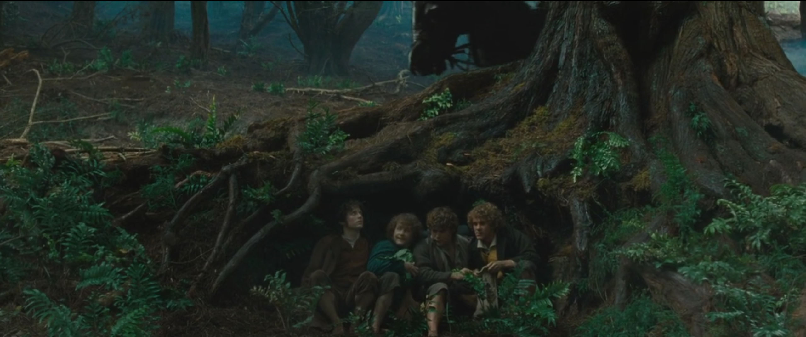
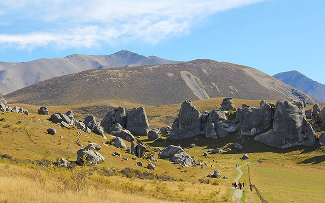
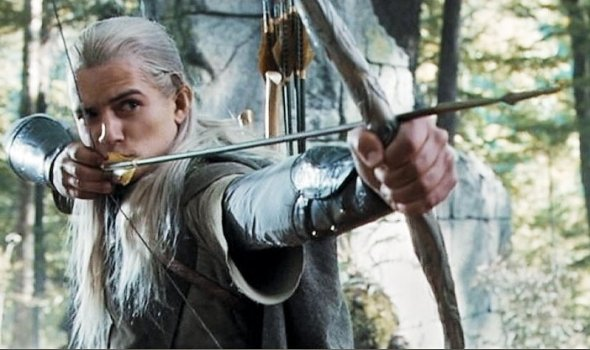
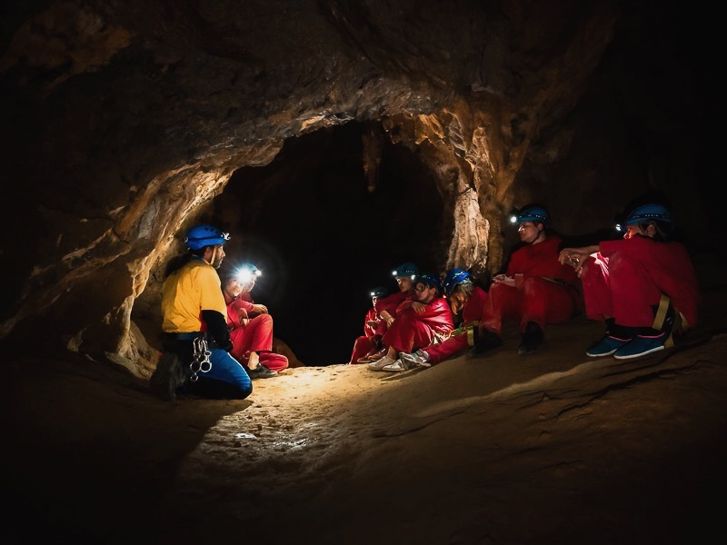
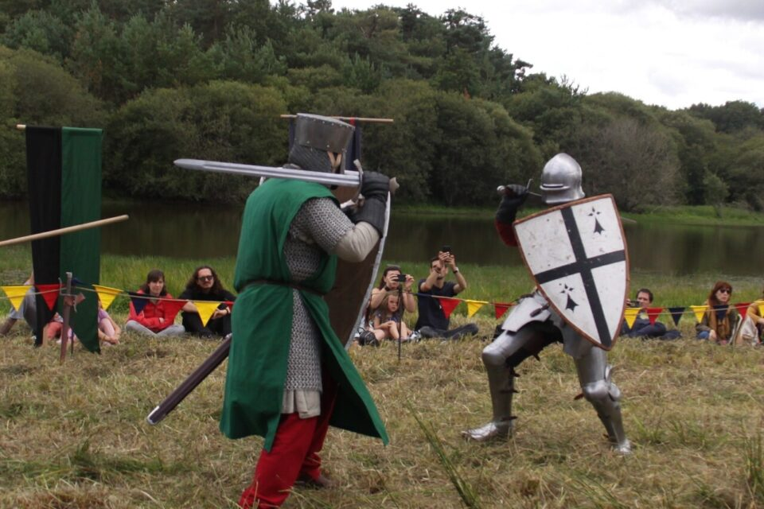
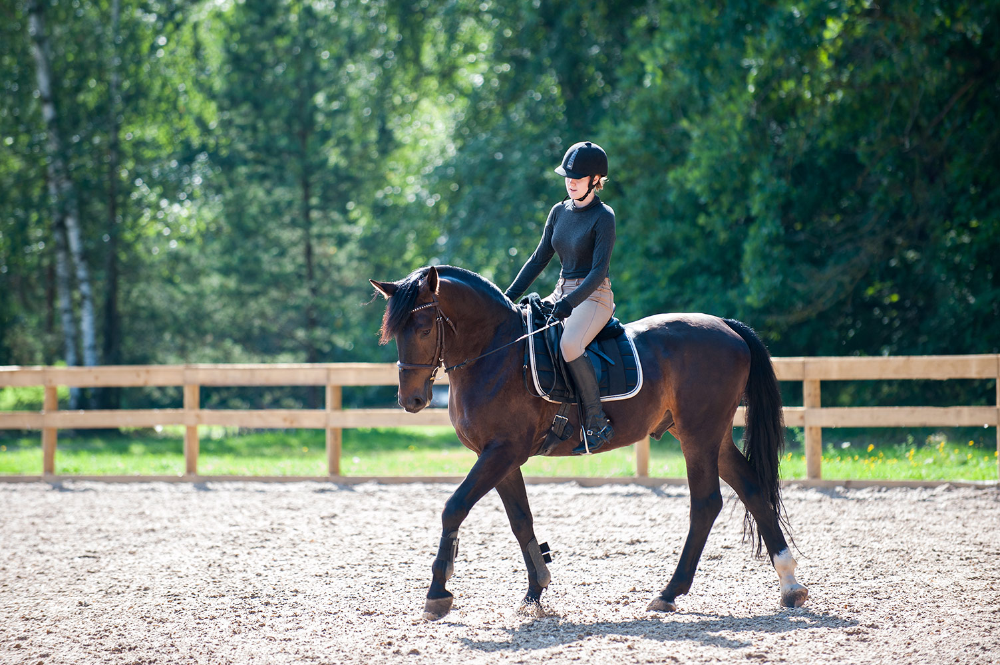

Activités

Cache-cache dans la Forêt de Fangorn
Tentez votre chance dans une partie de cache-cache dans la forêt dense et magique de Fangorn. L'immersion est totale, avec des arbres géants et un environnement mystérieux. Parfait pour ceux qui recherchent une aventure palpitante et un peu de suspense.
Prix : 50€
Âge minimum : 12 ans

Randonnée en Terre du Milieu
Venez découvrir les vastes paysages de la Nouvelle-Zélande qui ont servi de décor aux films du Seigneur des Anneaux. Traversez des vallées verdoyantes, des forêts mystérieuses et des montagnes majestueuses dans une randonnée qui vous transportera directement dans l'univers de Tolkien.
Prix : 120€
Âge minimum : 16 ans
Durée : 4 heures

Tir à l’Arc
Dans ce cours, vous apprendrez à manier l'arc comme un véritable elfe. Tirez sur des cibles variées tout en bénéficiant des conseils d’instructeurs expérimentés. Vous pourrez même participer à des compétitions amicales avec vos amis.
Prix : 40€
Âge minimum : 16 ans

Exploration de Grottes
Partez à la découverte de grottes mystérieuses et explorez des formations géologiques fascinantes. Une aventure souterraine inoubliable, avec des guides expérimentés pour vous assurer une expérience sûre et passionnante.
Prix : 60€
Âge minimum : 14 ans
Durée : 3 heures

Combat d'Épée
Apprenez l'art du combat à l'épée comme un chevalier médiéval. Entraînez-vous avec des épées en bois sous la supervision d'instructeurs qualifiés et participez à des duels amicaux pour tester vos compétences.
Prix : 70€
Âge minimum : 14 ans

Équitation en Terre du Milieu
Découvrez les magnifiques paysages de la Terre du Milieu à cheval. Traversez des forêts, des vallées et des collines, tout en appréciant la tranquillité et la beauté de cet environnement naturel.
Prix : 50€
Âge minimum : 12 ans
Durée : 2 heures